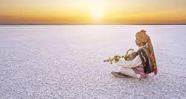
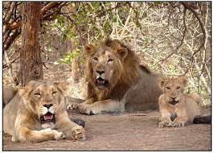

The Rann of Kutch captivates with its endless white salt flats, forming a surreal canvas where nature's simplicity meets breathtaking beauty.

Gir National Park, home to the majestic Asiatic lions, invites you to witness the untamed grace of these regal creatures in their natural habitat, nestled within the vibrant landscapes of western India.

The Statue of Unity, standing as the world's tallest statue, proudly honors Sardar Vallabhbhai Patel and symbolizes India's unity along the serene Narmada River.